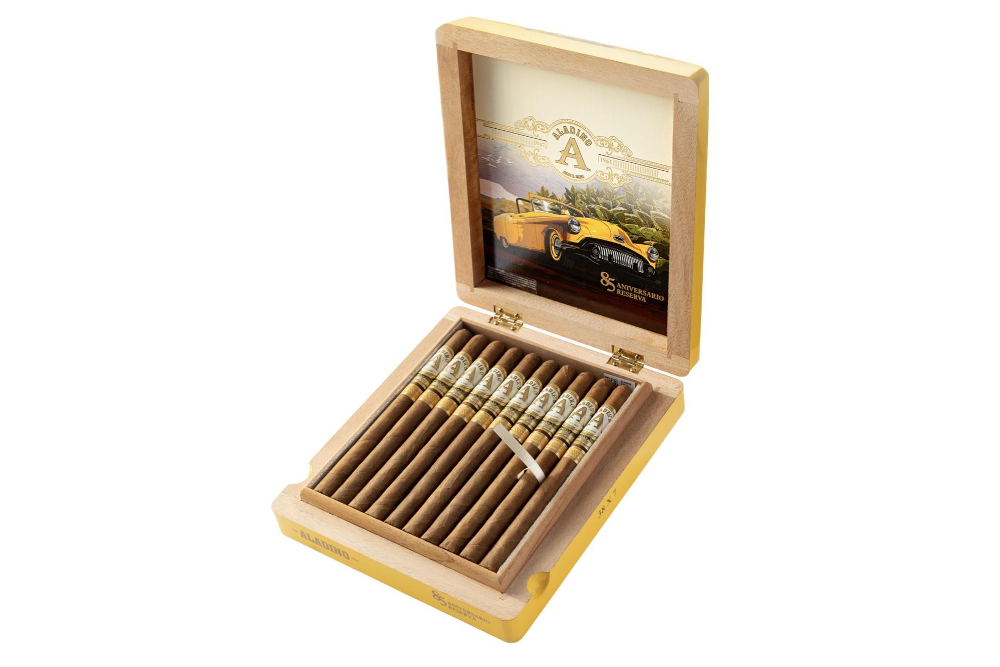

JRE Tobacco (Aladino) — News & Releases
CigarScope Japan coverage of JRE Tobacco (Aladino) (Honduras).

New Release · Honduras
JRE Tobacco has begun shipping the Aladino 85 Aniversario Reserva Elegante in the week of November 9 — a 7 x 38 lancero and third size in the 85 Aniversario Reserva line, at $22 per cigar and $440 per box of 20, offered only to qualifying retailers.
JRE Tobacco (Aladino) · November 12, 2026
Read the full story ›

Limited Edition · Honduras
JRE Tobacco's 6 x 52 toro for the 250th anniversary of America's founding uses only company-grown tobacco at $15, limited to 1,000 boxes of 13 — a count chosen for the 13 original colonies.
JRE Tobacco (Aladino) · November 9, 2026
Read the full story ›

New Release · Honduras
JRE Tobacco has renamed last year's Camp Aladino blends as Gorbusto by Aladino: the same 4 1/2 x 60 cigars at $11, now represented by the primate characters GORI, CHIMP and ORANG, arriving in April.
JRE Tobacco (Aladino) · November 9, 2026
Read the full story ›

New Release · Honduras
The 7 x 38 third vitola is all Honduran pinareño, priced at $22, limited to qualifying retailers and scheduled to ship during the week of Nov. 9.
JRE Tobacco (Aladino) · November 8, 2026
Read the full story ›
Back to top page